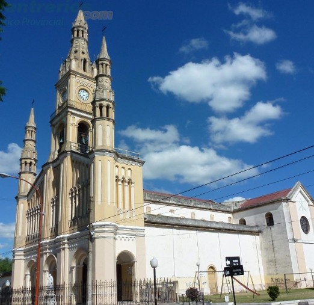

Fiestas y celebraciones
Gualeguay se destaca por sus carnavales, ferias artesanales y celebraciones religiosas que atraen visitantes de toda la región. Cada evento es una oportunidad para compartir la alegría, la identidad entrerriana y el espíritu amable de la ciudad.

Eventos destacados
Carnavales de Gualeguay
Con carrozas, comparsas y música, los carnavales son el evento más esperado del año y una experiencia que llena la ciudad de color.

Ferias artesanales
Espacios donde artesanos locales exhiben y venden sus creaciones en cuero, madera y tejidos, con ese trato cercano que hace la diferencia.

Fiestas patronales
Celebraciones religiosas que reúnen a la comunidad en torno a la fe, las tradiciones y el encuentro entre vecinos.

Pesca en Gualeguay
Los ríos y arroyos ofrecen un entorno ideal para la pesca deportiva, con especies como dorado, pacú y surubí muy buscadas por los visitantes.
Para vivirlo de cerca
Carnavales de Gualeguay
Una de las celebraciones más reconocidas de Entre Ríos, con color, música y mucho movimiento en cada noche de desfile.
Ferias artesanales
Un espacio para encontrar piezas locales, conversar con artesanos y llevarse un recuerdo con identidad y valor humano.
Fiestas y encuentros
Las celebraciones patronales y comunitarias mantienen vivo el espíritu de encuentro de la ciudad y fortalecen el sentido de comunidad.
Datos curiosos
Fiestas con historia
Los carnavales y celebraciones locales forman parte de una tradición que se fue consolidando con el tiempo y sigue creciendo cada año.
Encuentro de la comunidad
Muchas actividades se organizan pensando en que vecinos y visitantes compartan el mismo espacio de manera natural y cercana.
La ciudad se mueve
En temporada alta, las calles, ferias y escenarios se llenan de vida y ayudan a que Gualeguay tenga un ritmo especial.